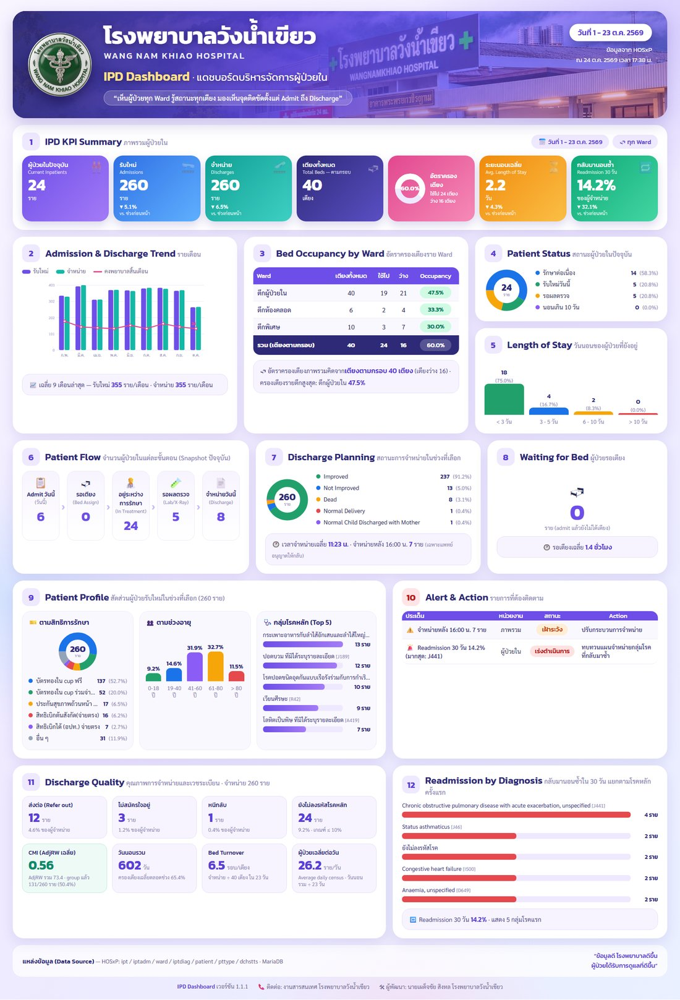
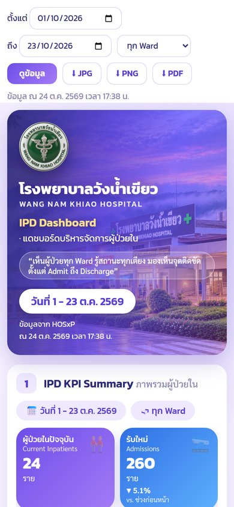

เว็บแอปที่ดึงข้อมูลผู้ป่วยในจากฐานข้อมูล HOSxP แบบสด แล้วแสดงเป็นอินโฟกราฟิกหน้าเดียว 12 บล็อก ผู้บริหารและหัวหน้าหอผู้ป่วยเปิดดูได้ทั้งบนคอมพิวเตอร์และมือถือ และกดส่งออกเป็นไฟล์ JPG / PNG / PDF ไปใช้ในการประชุมหรือส่งเข้ากลุ่มไลน์ได้ทันที
| # | บล็อก |
|---|---|
| 1 | ตัวชี้วัดหลัก — ผู้ป่วยใน รับใหม่ จำหน่าย เตียง ครองเตียง วันนอนเฉลี่ย Readmission |
| 2 | แนวโน้มรับใหม่ / จำหน่าย 9 เดือน |
| 3 | อัตราครองเตียงรายตึก |
| 4–5 | สถานะผู้ป่วย · วันนอนของผู้ป่วยที่ยังอยู่ |
| 6–8 | Patient Flow · Discharge Planning · ผู้ป่วยรอเตียง |
| 9 | โปรไฟล์ผู้ป่วย — สิทธิ ช่วงอายุ กลุ่มโรคหลัก |
| 10 | Alert & Action — ประเด็นเกินเกณฑ์ พร้อมสิ่งที่ควรทำ |
| 11 | คุณภาพการจำหน่าย — ส่งต่อ ไม่สมัครใจอยู่ หนี ลงรหัสค้าง CMI วันนอนรวม Bed Turnover |
| 12 | Readmission แยกตามกลุ่มโรค |

| รายการ | ข้อกำหนด |
|---|---|
| เครื่องเซิร์ฟเวอร์ | Linux (AlmaLinux / Rocky / RHEL 9, Ubuntu 22.04 ขึ้นไป) หรือ Windows 10/11/Server · CPU 2 core, RAM 2 GB, พื้นที่ว่าง 2 GB (ใช้ร่วมกับเครื่องที่มีอยู่แล้วได้ ไม่ต้องซื้อใหม่) |
| Python | 3.9 ขึ้นไป (AlmaLinux 9 มีมาให้แล้ว) |
| ฐานข้อมูล HOSxP | MariaDB / MySQL ที่เครื่องนี้ต่อถึงได้ พอร์ต 3306 · แนะนำให้ต่อเครื่อง Slave / Replica ไม่ใช่ฐานหลักที่ใช้ให้บริการ |
| บัญชีฐานข้อมูล | บัญชีที่มีสิทธิ์ SELECT อย่างเดียว (หัวข้อ 3) |
| เบราว์เซอร์บนเซิร์ฟเวอร์ | Chromium / Chrome / Edge — เฉพาะเมื่อต้องการปุ่มส่งออก JPG/PNG/PDF |
| ผู้ติดตั้ง | ผู้ดูแลระบบที่ใช้คำสั่ง Linux ขั้นพื้นฐานได้ (หรือ Windows) · เวลาติดตั้งประมาณ 15–30 นาที |
ipd_dashboard-{{VERSION}}.zip จาก
github.com/nopneo/ipd-dashboard-wnk/releases ภายในมีโปรแกรม คู่มือนี้ INSTALL.md
SECURITY.md และ .env.example (ตัวอย่างค่าตั้ง) — ไม่มีรหัสผ่านหรือข้อมูลของโรงพยาบาลใดติดมาล็อกอินฐานข้อมูล HOSxP ด้วยบัญชีผู้ดูแล (เช่น ผ่าน HeidiSQL หรือคำสั่ง mysql) แล้วรัน
โดยเปลี่ยน 10.0.0.20 เป็น IP ของเครื่องที่จะติดตั้งแดชบอร์ด และตั้งรหัสผ่านให้ยาวและเดายาก
CREATE USER 'ipd_ro'@'10.0.0.20' IDENTIFIED BY '<รหัสผ่านยาวอย่างน้อย 16 ตัว>'; GRANT SELECT ON hos.* TO 'ipd_ro'@'10.0.0.20'; FLUSH PRIVILEGES;
'%' — บัญชีนี้จะล็อกอินได้จากเครื่องนั้นเครื่องเดียวhos ให้แก้ทั้งในคำสั่งนี้และค่า DB_NAMEREAD ONLY ให้อีกชั้น แต่ไม่ควรพึ่งชั้นนี้อย่างเดียวทดสอบจากเครื่องแดชบอร์ด:
mysql -h <IP ฐานข้อมูล> -u ipd_ro -p hos -e "select count(*) from ipt where dchdate is null"
ได้ตัวเลขผู้ป่วยในปัจจุบันออกมา = พร้อมติดตั้ง
ตัวอย่างใช้ AlmaLinux 9 ติดตั้งที่ /opt/ipd_dashboard และรันด้วยผู้ใช้ ipd (ไม่ใช้ root)
ทุกคำสั่งรันด้วย root หรือ sudo
useradd -r -M -d /var/lib/ipd -s /sbin/nologin ipd
dnf install -y python3 unzip # Ubuntu: apt install -y python3-venv unzip
unzip ipd_dashboard-{{VERSION}}.zip -d /opt
cd /opt/ipd_dashboard
python3 -m venv .venv
.venv/bin/pip install -r requirements.txtDB_HOST DB_USER DB_PASS
cp .env.example .env nano .env chown -R root:root /opt/ipd_dashboard # โค้ดเป็นของ root → โปรแกรมแก้โค้ดตัวเองไม่ได้ chown root:ipd .env && chmod 640 .env # รหัสผ่าน: root แก้ได้ ipd อ่านได้ คนอื่นมองไม่เห็น
http://<IP เครื่อง>:5700/ จากเครื่องอื่นในโรงพยาบาล (กด Ctrl+C เพื่อหยุด)
runuser -u ipd -- .venv/bin/python app.py
IPD_EXPORT=0)
dnf install -y epel-release && dnf install -y chromium-headless
# Ubuntu: ติดตั้ง google-chrome-stable จาก dl.google.com (chromium ของ Ubuntu เป็น snap ใช้กับ service ไม่สะดวก)/etc/systemd/system/ipd-dashboard.service
[Unit] Description=IPD Dashboard After=network.target [Service] User=ipd Group=ipd WorkingDirectory=/opt/ipd_dashboard ExecStart=/opt/ipd_dashboard/.venv/bin/gunicorn -w 3 -t 120 -b 0.0.0.0:5700 app:app Restart=always Environment=HOME=/var/lib/ipd StateDirectory=ipd NoNewPrivileges=true PrivateTmp=true ProtectSystem=strict ProtectHome=true ProtectKernelTunables=true ProtectKernelModules=true ProtectControlGroups=true CapabilityBoundingSet= [Install] WantedBy=multi-user.target
systemctl daemon-reload
systemctl enable --now ipd-dashboard
systemctl status ipd-dashboard # ต้องขึ้น active (running)firewall-cmd --permanent --add-rich-rule='rule family=ipv4 source address=10.0.0.0/8 port port=5700 protocol=tcp accept' firewall-cmd --reload
ipd
ซึ่งแก้โค้ด อ่านไฟล์ระบบ หรือยกระดับสิทธิ์ไม่ได้ และปุ่มส่งออกจะเปิด sandbox ของ Chromium ได้ (root ต้องปิด)C:\ipd_dashboard แล้วเปิด PowerShell ในโฟลเดอร์นั้น
python -m venv .venv .venv\Scripts\pip install -r requirements.txt copy .env.example .env notepad .env
http://localhost:5700/
.venv\Scripts\waitress-serve --listen=0.0.0.0:5700 app:app
.env ให้อ่านได้เฉพาะบัญชีที่รันโปรแกรมและผู้ดูแลมี Dockerfile 2 แบบ ทั้งคู่ใช้ Alpine Linux และรันด้วยผู้ใช้ธรรมดา (uid 10001)
docker build -t ipd-dashboard . # ไม่มีปุ่มส่งออก (image เล็ก ช่องโหว่น้อย) docker build --target export -t ipd-dashboard-export . # มี Chromium สำหรับปุ่มส่งออก docker run -d --name ipd -p 5700:8080 --env-file .env --restart unless-stopped ipd-dashboard
--env-file ตอนรันเท่านั้น ไม่ฝังลงใน image-v /path/hospital_logo.png:/app/static/img/hospital_logo.png:roแก้ไฟล์ .env แล้วรีสตาร์ตบริการ (systemctl restart ipd-dashboard) ทุกครั้ง ·
ค่าที่ ต้องใส่ มีแค่ 5 ตัวแรก ที่เหลือไม่ใส่ก็ได้
| ค่า | ความหมาย | ค่าเริ่มต้น |
|---|---|---|
DB_HOST DB_PORT | ที่อยู่ฐานข้อมูล HOSxP | 127.0.0.1 · 3306 |
DB_NAME | ชื่อฐานข้อมูล | hos |
DB_USER DB_PASS | บัญชีอ่านอย่างเดียวจากหัวข้อ 3 | – |
PORT | พอร์ตของโปรแกรม (เมื่อรัน python app.py) | 5700 |
IPD_HOSPITAL_NAME | ชื่อโรงพยาบาลบนแถบหัว (ไม่ใส่ = อ่านจาก opdconfig ของ HOSxP) | อัตโนมัติ |
IPD_HOSPITAL_NAME_EN | ชื่อภาษาอังกฤษใต้ชื่อไทย | ไม่แสดง |
IPD_CONTACT | ช่องทางติดต่อท้ายหน้า เช่น งานสารสนเทศ โทร 1234 | – |
IPD_TOTAL_BEDS | เตียงตามกรอบ ใช้เป็นตัวหารอัตราครองเตียง (ดูหัวข้อ 14) | รวม bedcount |
IPD_LATE_DISCHARGE | เวลาที่ถือว่าจำหน่ายช้า (HH:MM) | 16:00 |
IPD_MAX_DAYS | ช่วงวันที่ยาวสุดที่เลือกได้ต่อครั้ง | 366 |
IPD_CACHE_TTL | เก็บผลไว้กี่วินาทีก่อนดึงใหม่ (ลดภาระฐานข้อมูล, 0 = ปิด) | 120 |
IPD_DB_TIMEOUT | เวลาสูงสุดต่อคำสั่ง SQL (วินาที) | 60 |
IPD_EXPORT | 0 = ซ่อนปุ่มส่งออก (เครื่องที่ไม่มี Chromium) | 1 |
IPD_EXPORT_WAIT | ส่งออก: รอคิวได้กี่วินาที (0 = ไม่ว่างตอบทันที) | 0 |
IPD_EXPORT_CACHE_TTL | เก็บไฟล์ส่งออกให้คนถัดไปที่ขอช่วงเดียวกัน (วินาที) | 300 |
IPD_CHROME_NO_SANDBOX | 1 = ปิด sandbox ของ Chromium (เฉพาะเมื่อส่งออกไม่ได้) | ปิดเมื่อเป็น root |
| ไฟล์ | ใช้ทำอะไร |
|---|---|
static/img/hospital_logo.png | ตราโรงพยาบาลบนแถบหัว · PNG สี่เหลี่ยมจัตุรัส พื้นโปร่งใส 512×512 px · ไม่มี = ใช้โลโก้กลาง |
static/img/hero.jpg | ภาพพื้นหลังแถบหัว เช่นภาพหน้าอาคาร · แนวนอน กว้าง ≥ 1600 px · ระบบทับเฉดม่วงให้อ่านตัวหนังสือออกเอง · ไม่มี = พื้นไล่สีม่วง |
วางไฟล์แล้วรีสตาร์ตบริการ (Linux: ให้ผู้ใช้ ipd อ่านได้ เช่น chmod 644)
ไฟล์ทั้งสองไม่อยู่ใน zip จึงไม่ถูกทับตอนอัปเดต
เปิดหน้าแดชบอร์ดในมือถือ แล้วเลือก เพิ่มลงในหน้าจอโฮม (Android: เมนู ⋮ · iPhone: ปุ่มแชร์) จะได้ไอคอน IPD Dashboard ที่เปิดเต็มจอเหมือนแอป

ถ้ามีเว็บเซิร์ฟเวอร์ของโรงพยาบาลอยู่แล้ว วางแดชบอร์ดไว้ใต้ path เช่น https://<โดเมน>/ipd/
โดยไม่ต้องเปิดพอร์ต 5700 ออกนอก โปรแกรมอ่าน header X-Forwarded-Prefix แล้วสร้างลิงก์ให้ถูกเอง
RewriteEngine On RewriteRule ^/ipd$ /ipd/ [R=302,L] ProxyPass /ipd/ http://127.0.0.1:5700/ timeout=120 ProxyPassReverse /ipd/ http://127.0.0.1:5700/ <Location /ipd/> RequestHeader set X-Forwarded-Prefix /ipd RequestHeader set X-Forwarded-Proto https </Location>
httpd -t (Ubuntu: apache2ctl -t)
→ ผ่านแล้วค่อย systemctl reload httpd · ถ้ามีบรรทัด ProxyPass / ส่งทั้งเว็บไปที่อื่น
ต้องวางบล็อกนี้ ก่อน บรรทัดนั้น ไม่งั้น /ipd/ จะถูกส่งไปผิดที่location = /ipd { return 302 /ipd/; }
location /ipd/ {
proxy_pass http://127.0.0.1:5700/;
proxy_set_header Host $host;
proxy_set_header X-Forwarded-Prefix /ipd;
proxy_set_header X-Forwarded-Proto $scheme;
proxy_read_timeout 120s;
}
ตรวจด้วย nginx -t แล้ว systemctl reload nginx · เมื่อใช้ proxy แล้ว
ตั้ง firewall ให้พอร์ต 5700 รับเฉพาะเครื่อง proxy (หรือให้ gunicorn ฟัง -b 127.0.0.1:5700)
http://<เครื่อง>:5700/healthz ตอบ {"status":"ok"}ward.ward_active='Y' และ ward.bedcount ใน HOSxPIPD_TOTAL_BEDSIPD_EXPORT=0)systemctl is-enabled ipd-dashboard = enabled)SELECT อย่างเดียว จำกัด IP และต่อ Replica.env สิทธิ์ 640 (Linux) ห้ามส่งต่อหรืออัปโหลดขึ้นที่ใด/ipd/export.*)พบช่องโหว่ กรุณาแจ้งผู้พัฒนาโดยตรง หรือผ่าน GitHub → Security → Report a vulnerability (ไม่เปิดเป็น issue สาธารณะ)
cd /opt
cp -a ipd_dashboard ipd_dashboard.bak-$(date +%Y%m%d) # สำรองก่อน
unzip -o ipd_dashboard-<เวอร์ชันใหม่>.zip -d /opt
ipd_dashboard/.venv/bin/pip install -r ipd_dashboard/requirements.txt
chown -R root:root ipd_dashboard && chown root:ipd ipd_dashboard/.env && chmod 640 ipd_dashboard/.env
systemctl restart ipd-dashboard
ไฟล์ .env, hospital_logo.png และ hero.jpg ไม่อยู่ใน zip จึงไม่ถูกทับ ·
ดูสิ่งที่เปลี่ยนใน CHANGELOG.md · มีปัญหาย้อนกลับได้โดยคืนโฟลเดอร์ที่สำรองไว้
ดู log ก่อนเสมอ: journalctl -u ipd-dashboard -n 50
| อาการ | สาเหตุ / วิธีแก้ |
|---|---|
| บริการไม่ขึ้น หรือหน้าเว็บ error 500 | ต่อฐานข้อมูลไม่ได้ — ตรวจ DB_HOST / รหัสผ่าน / firewall ฝั่งฐานข้อมูล
ด้วยคำสั่งทดสอบในหัวข้อ 3 · Access denied = รหัสผิด หรือบัญชีไม่ได้อนุญาต IP เครื่องนี้ |
Permission denied: '.env' | ตั้งสิทธิ์ใหม่: chown root:ipd .env && chmod 640 .env (มักเกิดหลังแก้ไฟล์ด้วยการคัดลอกทับ) |
| ภาษาไทยเป็นตัวอักษรแปลก ๆ | ฐานข้อมูลไม่ใช่ tis-620 ตามที่ HOSxP ใช้ทั่วไป — แจ้งผู้พัฒนาพร้อมผลของ
show variables like 'character_set%' |
| ปุ่มส่งออกขึ้น "ส่งออกไม่สำเร็จ" | ไม่มี Chromium — ติดตั้งตามหัวข้อ 4 ข้อ 5 · ติดตั้งแล้วยังไม่ได้ ลอง IPD_CHROME_NO_SANDBOX=1 |
| ปุ่มส่งออกขึ้น "กำลังส่งออกไฟล์ของผู้ใช้อื่นอยู่" | ปกติ — ทำทีละงาน รอประมาณ 15 วินาทีแล้วกดใหม่ |
| อัตราครองเตียงสูง/ต่ำผิดปกติ | ผลรวม ward.bedcount ไม่เท่ากรอบเตียงจริง — ตั้ง IPD_TOTAL_BEDS |
| ตึกบางตึกไม่ขึ้นในตาราง | ตึกนั้น ward_active ไม่ใช่ Y หรือ bedcount เป็น 0 ใน HOSxP |
| CMI ต่ำกว่าความจริง | เคสส่วนใหญ่ยังไม่ได้ group DRG (ipt.adjrw ว่าง) — การ์ดบอกจำนวนที่ group แล้วกำกับไว้ |
| ลิงก์ผิดเมื่อเปิดผ่าน /ipd/ | proxy ไม่ได้ส่ง X-Forwarded-Prefix — ตรวจค่าในหัวข้อ 9 |
| หน้าโหลดช้า | ฐานข้อมูลหลักรับภาระมาก — ชี้ไป Replica, เพิ่ม IPD_CACHE_TTL, ลดช่วงวันที่ |
| ตัวชี้วัด | วิธีคิด (ตารางใน HOSxP) |
|---|---|
| ผู้ป่วยในปัจจุบัน | แถวใน ipt ที่ dchdate ว่าง (ยังไม่จำหน่าย) |
| รับใหม่ / จำหน่าย | ipt.regdate / ipt.dchdate อยู่ในช่วงที่เลือก · เทียบช่วงก่อนหน้าที่ยาวเท่ากัน |
| อัตราครองเตียง (ปัจจุบัน) | ผู้ป่วยในปัจจุบัน ÷ เตียงตามกรอบ × 100 · เตียงตามกรอบ = IPD_TOTAL_BEDS
หรือผลรวม ward.bedcount ของตึกที่เปิดใช้ |
| ครองเตียงเฉลี่ยตลอดช่วง | วันนอนรวม ÷ (เตียง × จำนวนวันในช่วง) × 100 |
| วันนอนรวม | จำนวนวันที่ผู้ป่วยแต่ละรายนอนอยู่ภายในช่วงที่เลือก (นับวันรับ ไม่นับวันจำหน่าย) |
| วันนอนเฉลี่ย (ALOS) | ค่าเฉลี่ย dchdate − regdate ของผู้ที่จำหน่ายในช่วง |
| Readmission 30 วัน | ผู้จำหน่ายในช่วงที่กลับมา admit ใหม่ (AN อื่น HN เดิม) ภายใน 30 วันหลังจำหน่าย ÷ ผู้จำหน่าย |
| ส่งต่อ / ไม่สมัครใจอยู่ / หนี | ipt.dchtype = 04 / 02 / 03 ตามรหัสมาตรฐาน |
| จำหน่ายหลัง 16:00 น. | เฉพาะแพทย์อนุญาตให้กลับ (dchtype 01) และ dchtime เกินเวลาที่ตั้ง |
| ยังไม่ลงรหัสโรคหลัก | ผู้จำหน่ายที่ไม่มีแถวใน iptdiag ที่ diagtype='1' · เกิน 10% ขึ้นเตือน |
| CMI | ค่าเฉลี่ย ipt.adjrw ของเคสที่ group แล้ว (adjrw > 0) |
| Bed Turnover | จำนวนผู้จำหน่าย ÷ จำนวนเตียง |
| รอเตียง | admit แล้วแต่ยังไม่มีแถวเตียงที่เปิดอยู่ใน iptadm |
ตัวเลขทุกตัวมาจากฐานข้อมูลจริง ไม่มีค่าประมาณ · ถ้าโรงพยาบาลไม่ได้บันทึกช่องใด ตัวชี้วัดนั้นจะเป็น 0
| ผู้พัฒนา | นายเผด็จชัย สิงหล โรงพยาบาลวังน้ำเขียว จ.นครราชสีมา |
| ซอร์สโค้ด / แจ้งปัญหา | github.com/nopneo/ipd-dashboard-wnk (เมนู Issues) |
| ใบอนุญาต | MIT — ใช้ คัดลอก แก้ไข แจกจ่ายได้ฟรี โดยคงข้อความลิขสิทธิ์ไว้ ซอฟต์แวร์ให้ "ตามสภาพ" โรงพยาบาลผู้ใช้รับผิดชอบการตั้งค่าความปลอดภัยและการใช้ข้อมูลตาม พ.ร.บ.คุ้มครองข้อมูลส่วนบุคคล |
| ส่วนประกอบอื่น | ฟอนต์ Kanit และ Sarabun (SIL Open Font License) · "HOSxP" เป็นของ บริษัท บางกอกเมดิคอลซอฟต์แวร์ จำกัด โครงการนี้ไม่ใช่ผลิตภัณฑ์ทางการของ BMS |
.env